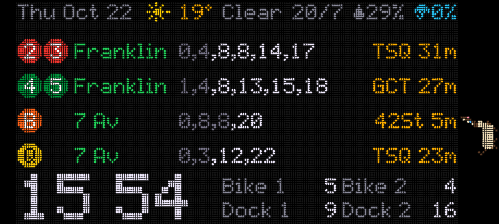

SUBWAY TIME
An LED-matrix NYC subway, Citi Bike & weather board, living on an old Android phone.
Live demo: the real board code, with sample trains.
What it shows
- Next trains from Franklin Av (2 3 4 5) and 7 Av (B Q), every train in the next 15–25 min, the ones too soon to catch dimmed
- Time to 42 St from the live feed: Times Sq, Grand Central or Bryant Park, depending on the line
- Weather with a pixel icon, high/low, humidity and rain chance for the next 3 hours
- Citi Bike bikes at two nearby stations, open docks at two more
- A big clock with a blinking colon
- A Siamese cat that walks the black strip covering a cracked corner, turning liquid to squeeze past the camera
How it works
A small Node server runs in Termux on a Galaxy S21 and pulls the MTA's realtime feeds, Citi Bike's station status and Open-Meteo, no API keys needed. Chrome shows the board full screen. Any other device on the same Wi-Fi can open it too.
It's built to live on a charger: the screen goes dark at night, the panel shifts a dot every few minutes against burn-in, and charging stops at 60%.
On the phone

Make your own
Your stations, your bikes, your weather: it's all one config file. MIT licensed.
github.com/lynxgpt/subway-board →